Building on the IoT tasks above, I built a hosted, login-protected Firebase dashboard for the same ESP32 setup — one task to stand up the Firebase project itself, and one to get the ESP32's real sensor data and bulb control actually flowing into it live.
The goal of this task was to stand up a complete Firebase-backed web app — hosting, a login screen, and a database to hold live sensor data — before wiring up any hardware at all. I wanted the dashboard itself fully working and deployed first, so Task 5 could focus purely on getting real data flowing into it.
I started in the Firebase console and created a brand new project, naming it Smart IoT Monitoring. This project became the home for everything else in this task — Hosting, Authentication, and the Realtime Database all live under it.
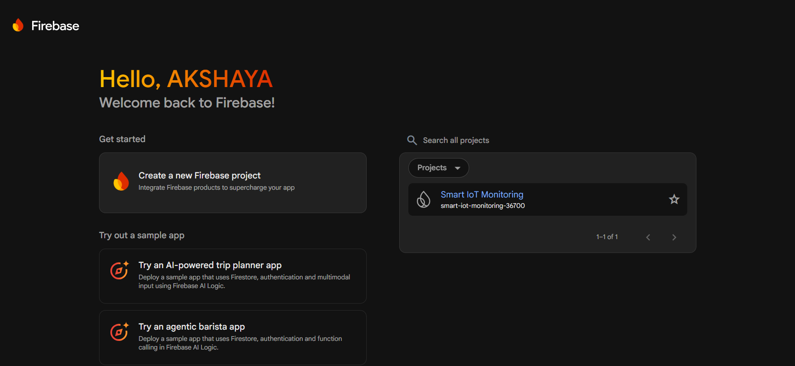
Next, I registered a web app inside the project, which gave me a Firebase configuration snippet — apiKey, authDomain, projectId, storageBucket, messagingSenderId and appId. This is the key that lets both the web dashboard and, later, the ESP32 firmware talk to this specific Firebase project.
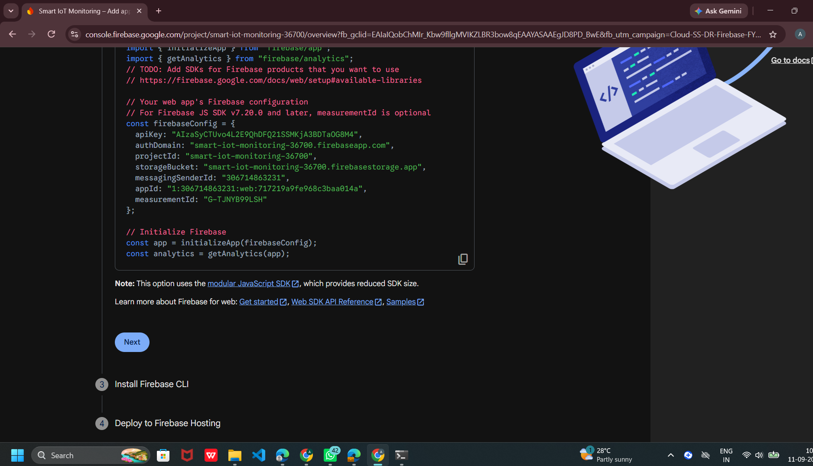
On my machine, I checked my Node.js and npm versions, then installed the Firebase CLI globally with npm install -g firebase-tools. Once installed, I confirmed the version with firebase --version and logged into my Firebase account with firebase login.
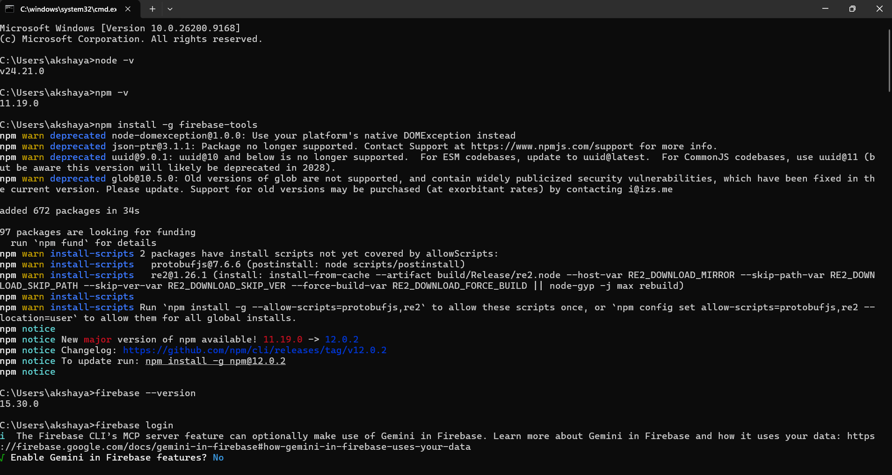
I confirmed the project existed from the CLI's point of view with firebase projects:list, then created a dedicated folder for the hosting files — Smart-IoT-Monitoring inside my Desktop — and ran firebase init hosting from inside it. I linked it to the existing Smart IoT Monitoring project, set public as the hosting directory, and declined the single-page-app rewrite and GitHub Actions options since I didn't need them.
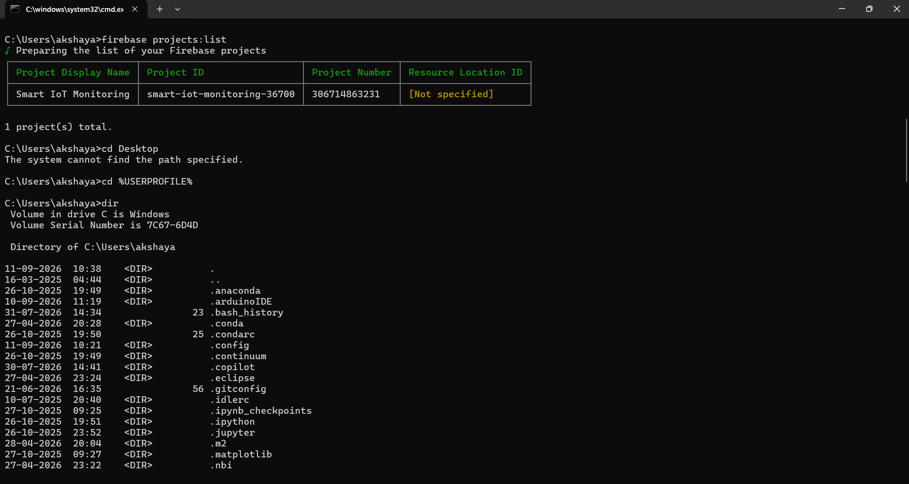
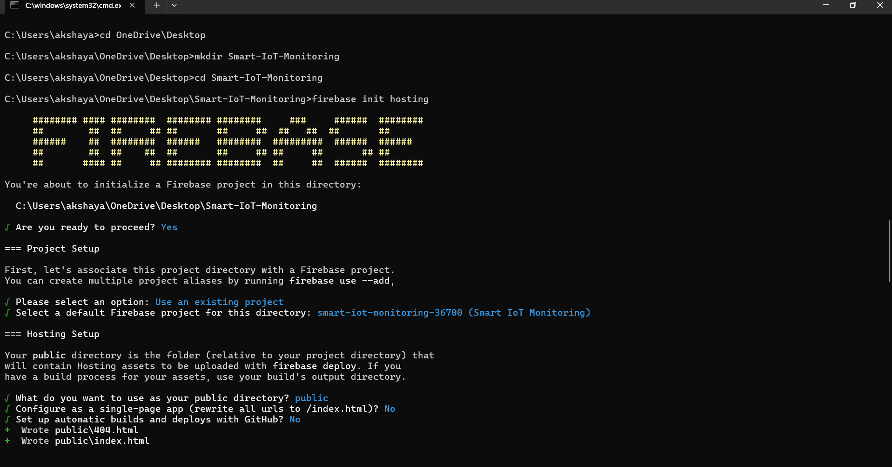
After testing the hosting files locally, I deployed everything with firebase deploy. The CLI uploaded the files, finalized a new hosting version, and released it — giving me a live Hosting URL for the dashboard.
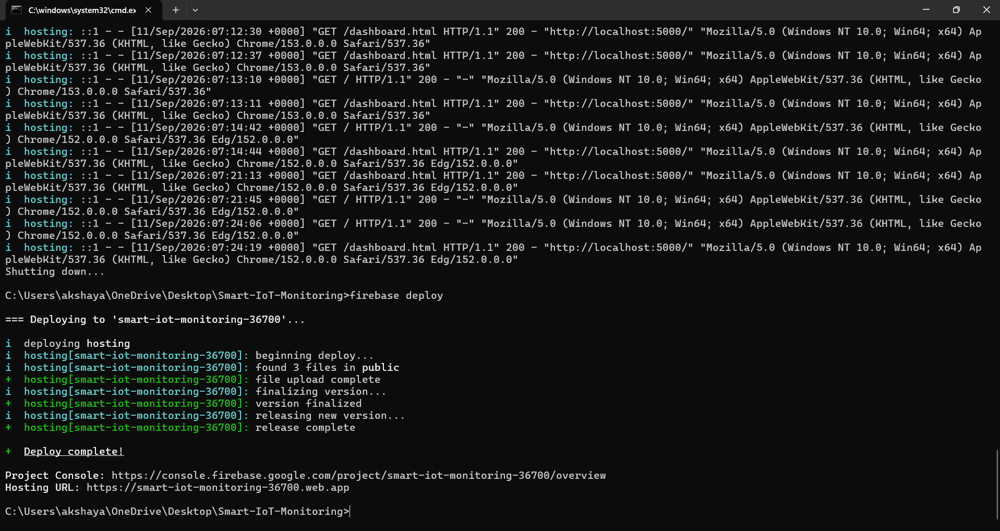
For the login screen, I set up Firebase Authentication with email/password sign-in and added the user accounts allowed to access the dashboard. For the data side, I set up the Realtime Database with a structure to hold everything the dashboard would need: current (live sensor readings), history (logged readings over time), sensors, and settings (like the automatic-mode threshold).
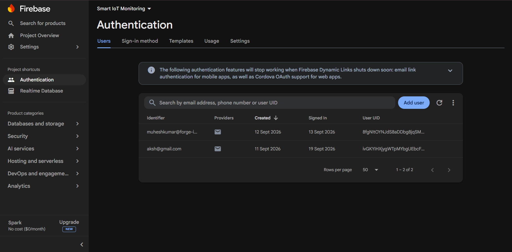
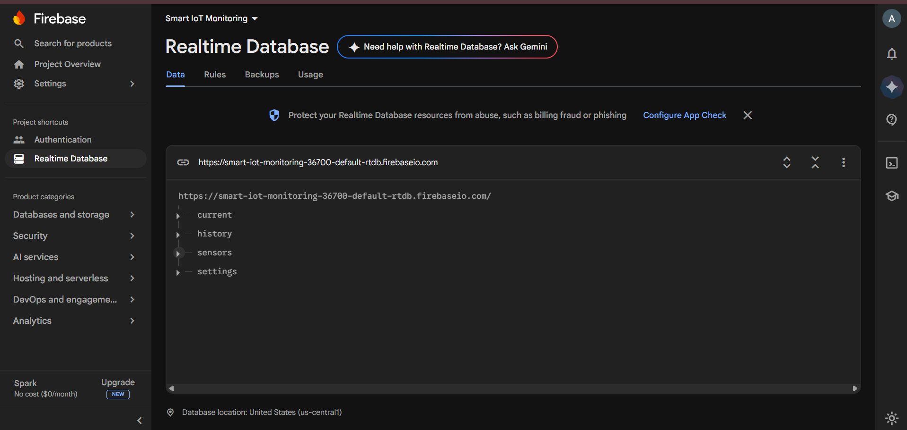
With everything deployed, visiting the live Hosting URL now showed a proper login screen for Smart IoT Monitoring, requiring an email and password before anyone could see the dashboard behind it.
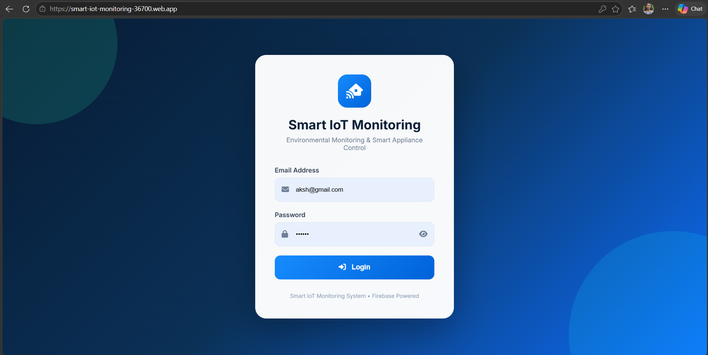
After logging in, the dashboard itself was ready — Temperature, Humidity, Ambient Light and Bulb Status cards, an Appliance Control panel for manual/automatic bulb control, and a System Status panel. At this point it was still waiting on real hardware: the values all showed as placeholders, since no ESP32 was sending data yet. That's exactly where Task 5 picks up.
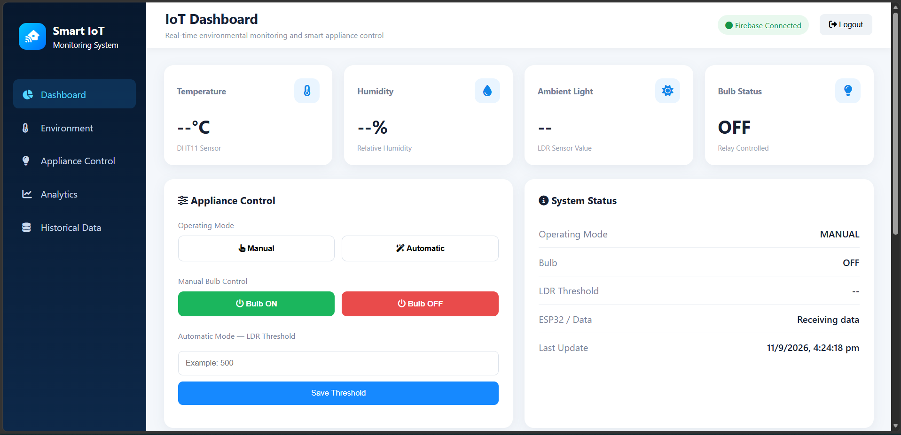
Result: a fully deployed, login-protected Firebase web app — Hosting, Authentication, and a Realtime Database — live at its own URL and ready to display and control real sensor data as soon as a device starts sending it.
With the Firebase dashboard live from Task 4, this task was about wiring up the actual hardware and writing the ESP32 firmware so that real sensor readings — and real bulb control — flow into that dashboard live, in both directions.
I wired everything together on a breadboard around an ESP32 DevKit V4: a DHT11 sensor for temperature and humidity, an LDR module for ambient light, and an SRD-05VDC relay module switching a 60W bulb through its normally-open contact from the 230V wall outlet. The ESP32 reads the two sensors, drives the relay, and talks to the Firebase Realtime Database roughly every couple of seconds.
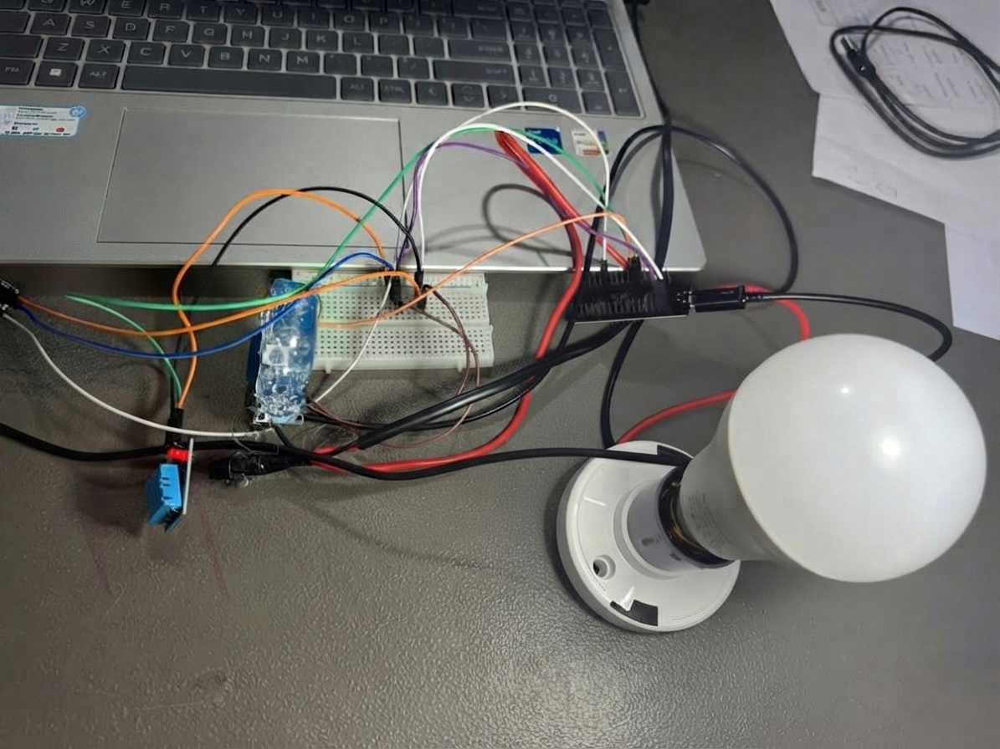
In Arduino IDE, I wrote the ESP32 sketch and set up the credentials it needed at the top: the Wi-Fi SSID and password, the Firebase Web API key, the Realtime Database URL, and the email/password of the Firebase Authentication user the board signs in as before it's allowed to read or write any data.
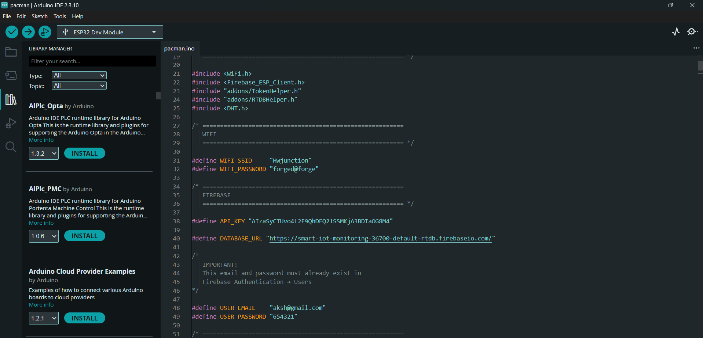
I mapped out the pins for the LDR, relay, and DHT11, created the Firebase data/auth/config objects, and used the Serial Monitor to confirm the board was reading real values and preparing each payload correctly — LDR reading, temperature, humidity, current mode, and bulb state — before trusting it to actually send anything.
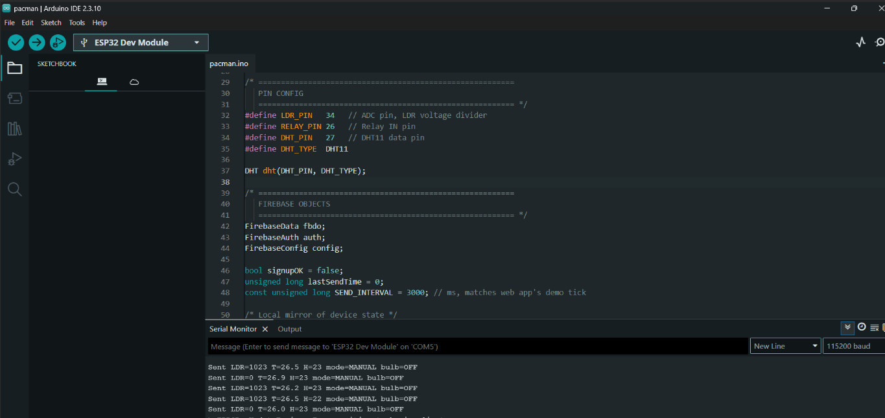
With the firmware from Step 3 uploaded and confirmed on the Serial Monitor, the next check was to see the whole pipeline working together in one place — the wired ESP32 setup right next to the live dashboard, both running at the same time. What's actually happening here is that the ESP32 on the breadboard is reading its sensors and writing straight into the Firebase Realtime Database, while the dashboard open on the laptop is reading from that exact same database — so any change on the hardware side shows up on the browser within a second or two, with no manual refresh needed.
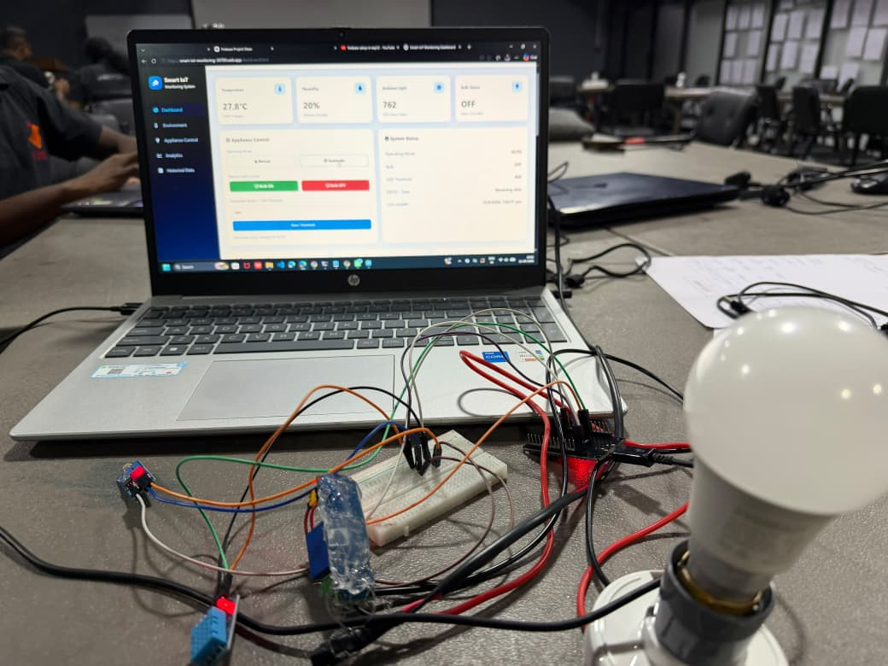
Once live values were showing up, I spent time watching the dashboard's Historical Data table specifically, rather than just the "current" readings on the main screen. Seeing new rows appear on their own as the temperature, humidity, and LDR values updated was what actually confirmed the full logging path — ESP32 → Firebase → the dashboard's history view — was working end to end, not just the live snapshot.
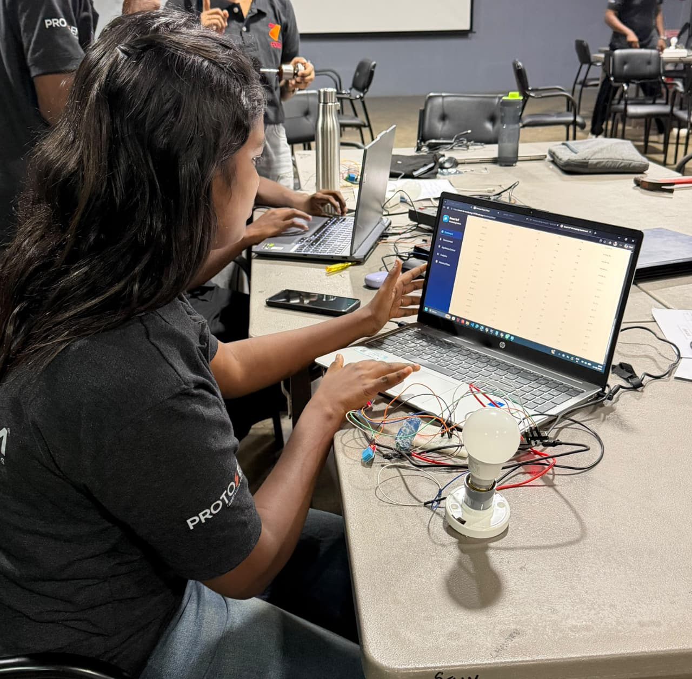
The Appliance Control panel gives two ways to run the bulb. In Manual mode, the Bulb ON and Bulb OFF buttons switch the relay directly from the browser, regardless of how bright or dark it is. In Automatic mode, the firmware instead compares the live reading from the LDR (Light Dependent Resistor) module — the same ambient-light sensor from Step 1 — against a threshold value set on the dashboard (800 in the screenshot below).
Covering the LDR blocks light from reaching it, so its reading drops below the threshold — the ESP32 reads this as "it's dark now" and automatically switches the bulb ON. Uncovering it lets light back in, the reading rises back above the threshold, and the ESP32 automatically switches the bulb OFF again — turning the sensor into a simple automatic light-in-the-dark switch, with the threshold itself adjustable straight from the dashboard.
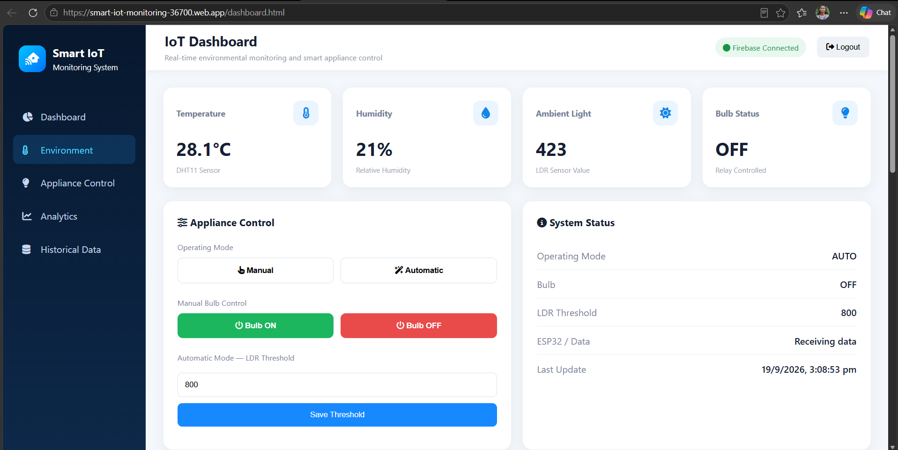
The dashboard also keeps a running history: temperature, humidity, and ambient light trends charted over time, plus a full historical data table I can download as a CSV — turning the ESP32 into a proper logged environmental monitor rather than just a live readout.
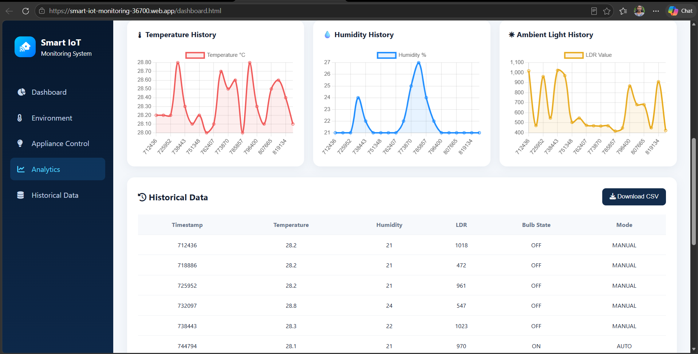
Result: the ESP32 and its sensors fully integrated with the Firebase dashboard from Task 4 — live readings, working bulb control in both Manual mode and an Automatic mode driven by the LDR's ambient-light threshold, and a logged history with CSV export, all behind the login screen.
Splitting this into two tasks — build the platform first, then connect the hardware — turned out to be the most useful decision of the whole project.
firebase login, firebase init hosting, firebase deploy — is a genuinely quick way to go from a blank project folder to a live, public URL.This project made the gap between "a device with sensors" and "a real product" much clearer to me. Task 4 was almost entirely about infrastructure — hosting, login, and a database schema — before a single sensor reading existed. Task 5 was where it actually became a product: real temperature and humidity on a live dashboard, a bulb I could switch from a browser in Manual mode or let respond automatically to the LDR sensor in Automatic mode, and a history I could look back through or export. Seeing the same Firebase project serve both the web app and the ESP32 firmware helped me understand backends as something shared across multiple kinds of clients, not just "a website's database." That's a pattern I expect to reuse in almost every connected project from here on.